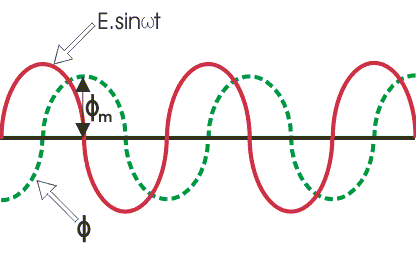
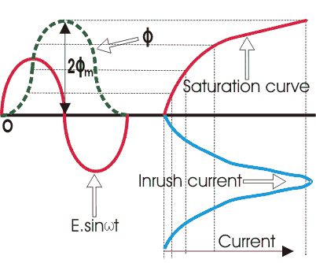

Magnetizing Inrush Current in Power Transformer
When an electrical power transformer is switch on from primary side, with keeping its secondary circuit open, it acts as a simple inductance. When electrical power transformer runs normally, the flux produced in the core is in quadrature with applied voltage as shown in the figure below. That means, flux wave will reach its maximum value, 1/4 cycle or π/2 angle after, reaching maximum value of voltage wave. Hence as per the waves shown in the figure, at the instant when, the voltage is zero, the corresponding steady state value of flux should be negative maximum. But practically it is not possible to have flux at the instant of switching on the supply of transformer. This is because, there will be no flux linked to the core prior to switch on the supply. The steady state value of flux will only reach after a finite time, depending upon how fast the circuit can take energy. This is because the rate of energy transfer to a circuit cannot be infinity. So the flux in the core also will start from its zero value at the time of switching on the transformer.
According to Faraday's law of electromagnetic induction the voltage induced across the winding is is given as e = dφ/dt. Where φ is the flux in the core. Hence the flux will be integral of the voltage wave.

If the transformer is switched on at the instant of voltage zero, the flux wave is initiated from the same origin as voltage waveform, the value of flux at the end of first half cycle of the voltage waveform will be,
Where φm is the maximum value of steady state flux. The transformer core are generally saturated just above the maximum steady state value of flux. But in our example, during switching on the transformer the maximum value of flux will jump to double of its steady state maximum value. As, after steady state maximum value of flux, the core becomes saturated, the electric current required to produced rest of flux will be very high. So transformer primary will draw a very high peaky electric current from the source which is called magnetizing inrush electric current in transformer or simply inrush electric current in transformer.

Magnetizing inrush electric current in transformer is the electric current which is drown by a transformer at the time of energizing the transformer. This electric current is transient in nature and exists for few milliseconds. The inrush electric current may be up to 10 times higher than normal rated electric current of transformer. Although the magnitude of inrush electric current is so high but it generally does not create any permanent fault in transformer as it exists for very small time. But still inrush electric current in power transformer is a problem, because it interferes with the operation of circuits as they have been designed to function. Some effects of high inrush include nuisance fuse or breaker interruptions, as well as arcing and failure of primary circuit components, such as switches. High magnetizing inrush electric current in transformer also necessitate over-sizing of fuses or breakers. Another side effect of high inrush is the injection of noise and distortion back into the mains.
Video Presentation of Inrush Current in Transformer
Design with  by SARU TECH
by SARU TECH
www.sarutech.com
Content Credited to electrical4u.com
Online Electrical Engineering Study Site